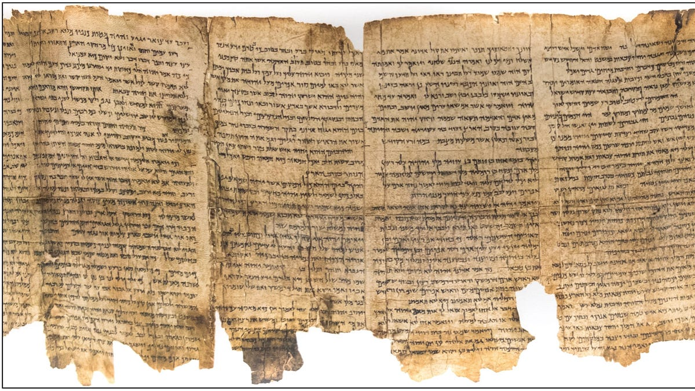

11 Caves, 1 Desert: What the Dead Sea Scrolls Are, Explained Simply for You
Boys watching goats found jars in a cave.
Boys watching goats found jars in a cave. Inside the jars were scrolls older than any Bible copy the world knew at that time. That find still helps you trust how the text was kept. Here is what those scrolls are, in plain words.
The Dead Sea Scrolls are very old copies of Bible books and other writings found in 11 caves near Qumran by the Dead Sea, starting in 1946 and 1947. About 900 manuscripts were found in all, most in small pieces. The Great Isaiah Scroll is a full copy of Isaiah about a thousand years older than the oldest full copies known before it.
What the video shows: The video tells the story of a shepherd who threw a stone into a cave above the Dead Sea and heard something break. It shows what was inside that cave and why it mattered. It walks through the gap in time between the old copies people had and these new finds. It tells how scrolls were sold, how more caves were found till there were eleven in all, and it gives a long look at the Great Isaiah Scroll. It asks if the Bible was changed over time, and it shows pages from the old codices that people used before this find, so you can see how close the Isaiah text stayed across a long span of years.
Where were the Dead Sea Scrolls found, and when?
They were found in a dry desert place near the Dead Sea. The site is called Qumran. It sits near the north west shore of the Dead Sea. The land there is hot, rocky, and full of caves in cliffs.
The first scrolls were found in 1946 or 1947. Sources say 1946/47 onward, because the exact first month is told in more than one way. From that first cave, finds went on for years. In all, scrolls came from 11 caves near Qumran.
A cave is a hollow place in rock, like a room made by nature in a cliff. In that dry air, old things can last a long time if they are kept out of rain and sun. Jars and caves in a dry desert are a good place for scrolls to hide and last.
The scrolls were written long ago. Scholars say they were written roughly between about 250 years before Christ and about 68 years after Christ. Say about when you say these dates. They are scholars' best reading of the facts, not a date stamped on each scroll. About means near that time, not exact to the year.
Before Christ means the years before Jesus was born. After Christ means the years after. So the scrolls span a time of about three hundred years, give or take. Some are older, some are newer, all are very old.
Think about that span like this. If you put a mark for the oldest scrolls and a mark for the newest scrolls on a long line, the line would cover many lives. Grandparents to grand children to their grand children and more wrote and copied and kept these texts. This was not one man's work in one year. It was care over a long time.

How were the first scrolls found in the cave?
The first find is a simple story. Shepherd boys were out with goats near Qumran. A shepherd boy is a boy who watches sheep or goats while they eat and keeps them safe.
As the story is told, a boy threw a stone into a cave. He heard a sound like clay breaking. That sound made him look more. In the cave were clay jars. A clay jar is a pot made from baked earth, used to store things and keep them safe and dry.
Inside the jars were scrolls. A scroll is a long sheet of material rolled up, with writing on it, used before books with bound pages were common. You unroll it to read it. You roll it back up to store it.
That first cave held some of the best kept scrolls, in jars that had kept out damp and bugs for a long, long time. More caves were searched after that. Some held scrolls in jars. Some held scrolls in pieces on the cave floor. Each new cave added more texts.
It helps to picture the jars. They are tall, with lids. A scroll fits inside, rolled tight. The jar is shut, placed in a dark cave, in dry air. No rain gets in. No sun fades the ink fast. Time passes, empires rise and fall, and the jars sit still. That still, dry dark is why any of this lasted for you to read about now.
The boys did not know at first what they had found. The scrolls were sold, and scholars saw them and knew they were old and rare. From there, a wide search of the caves began, and the full find came to light step by step.
What is actually in the Dead Sea Scrolls?
In all, there are about 900 manuscripts. A manuscript is a text written by hand, not printed by a machine. About means near 900. Counts vary a bit because most scrolls are in pieces, and scholars must decide how pieces fit.
Most scrolls are fragments. A fragment is a small broken piece of a larger thing. Think of a torn page, or a page with most of it gone and just a corner left with a few words. That is the state of most of the find. Only a few scrolls were found whole or near whole.
The texts are of more than one kind. Some are copies of Bible books. Some are other writings from that time: prayers, rules for a group, notes on Bible texts, and other works. The Bible book copies are the part most readers ask about first, because they let us check the Bible text over time.
The scrolls are mostly in Hebrew, with some in other old tongues of that place and time. The key point for a Bible reader is not the full list of kinds. It is this: here are hand written copies from about two thousand years ago, kept in a desert, now open for study.
Here is the hardest idea in this post, so hear it twice.
First, think of a family letter copied by hand. Your great grandmother writes a letter. Her daughter copies it word by word to keep it safe. Her grand daughter copies that copy again, years later. Each copy is made with care, letter by letter. When you lay all three side by side a hundred years later, you can check: did the words stay the same? Where a word is smudged, the other copies help you read it. The scrolls work like that, but over a thousand years and with Bible books.
Second, think of a relay race. A runner carries a baton and hands it to the next runner, who carries it and hands it on. If the baton gets to the end, you know each runner did his part and did not drop it. Copying a Bible book by hand, age after age, is like that race. Each scribe is a runner. A scribe is a person who copies texts by hand. The scrolls let you see an early leg of the race and check the baton: the text itself.
Both pictures point to one truth. Old copies let you test if a text was kept with care over time. The Dead Sea Scrolls give you a very early test point for the Hebrew Bible.

Why does the Great Isaiah Scroll matter so much?
One scroll stands out. It is called the Great Isaiah Scroll. It is a full copy of the book of Isaiah, from start to end, on one long scroll.
Before this find, the oldest full Hebrew Bible copies known were from about the year 1000. Those are the Aleppo Codex and the Leningrad Codex. A codex is a book with pages bound on one side, like books now, not a rolled scroll.
Year 1000 is about a thousand years after the time of Jesus. That is a long gap between the first writing of Isaiah and the oldest full copy people had in hand. A reader could ask, in that long gap, did the words change a lot?
The Great Isaiah Scroll helps answer that. It is about a thousand years older than those codices from about year 1000. So now you have Isaiah from near the time before Jesus, and Isaiah from about year 1000, and you can lay them side by side.
When scholars did that, the Isaiah text matched very closely. Very closely does not mean each letter is the same in each place with no small change at all. It means the book, its words, its order, its teaching, stayed firm across a thousand years of hand copying. Small copy marks and spelling shifts exist, as they do in any hand copied text, but the text as a whole held.
That is a strong fact. It does not prove each claim in Isaiah is true; that is a new question. It does show the text was kept with great care. Scribes did not remake the book each age to fit their own day. They copied what they got, with care.
Picture the length. The Great Isaiah Scroll is long when unrolled, many feet across a room. Verse after verse, chapter after chapter, all of Isaiah is there. To see a full Bible book that old, in one piece, is rare. That rarity plus its age is why it is shown with such care now.
Where are the scrolls now, and can you see them?
Most of the scrolls are kept in Jerusalem at the Shrine of the Book. The Shrine of the Book is a special building that is part of the Israel Museum. It was built to hold and show the scrolls in a safe way, with low light and care for the old material.
You do not have to go to Jerusalem to see them at all. Photos of the scrolls can be seen free online in the Leon Levy Dead Sea Scrolls Digital Library. Digital here means on a computer or phone screen. You can look at high quality photos of scrolls and fragments, zoom in, and see the hand writing for yourself.
That free access matters. A find this old could have been locked away for a few scholars only. Instead, any reader with internet can look at the photos and follow along as scholars publish their work. You can see the Great Isaiah Scroll in photos, line by line, from your own home.
If you go to look, start slow. Pick the Great Isaiah Scroll first. Find a chapter you know, like Isaiah 40 or Isaiah 53, and look at the photo next to your English Bible. You will not read Hebrew at first, and that is fine. Just seeing the age, the lines, the care in the hand, teaches you what hand copying meant.
Then look at a fragment photo. See how small some pieces are. See how much work it takes to read a torn edge with half a word gone. That view will make you grateful for the full scrolls that did last, and honest about the limits of the broken ones.
What are the honest limits of what the scrolls can tell us?
Honest limits keep a good find from being oversold. There are real limits here, and the post must say them plain.
First, most scrolls are fragments. We do not have 900 whole books lined up neat. We have many, many pieces, some tiny, that scholars have spent years fitting together. Some texts are still hard to read in full because parts are gone for good.
Second, who wrote every scroll is still argued by scholars. Many scholars link the scrolls to a strict Jewish group that lived at Qumran. Others argue for other views for some scrolls. The safe, true thing to say is: scholars still argue about who wrote every scroll and why all of them were placed in those caves. Do not state a debated point as if it is settled fact.
Third, dates are best readings, not stamps. When we say about 250 years before Christ to about 68 years after, that is scholars reading hand writing styles, material tests, and other clues and giving their best span. New tests can shift a date a bit. About is the honest word.
Fourth, the scrolls do not answer every Bible question. They give early copies and other writings from that age. They help a lot with the history of the text and the world of that time. They do not, on their own, settle every point of faith or teaching. Keep each claim in its lane.
Those limits do not weaken the find. They make your trust in what it does show more firm, because you are not claiming more than the facts hold. A thousand year check on Isaiah that matches very closely is a big fact, even with fragments all around it.
Checklist:
- Name the find in one line: about 900 manuscripts from 11 caves near Qumran, found from 1946/47 onward
- Say the date span with about: about 250 years before Christ to about 68 years after
- Name the Great Isaiah Scroll and why it matters: a full Isaiah about 1,000 years older than the codices from about year 1000
- Name the old codices it is compared with: the Aleppo and Leningrad codices from about the year 1000
- State the limits out loud: most scrolls are fragments, and who wrote every scroll is still argued by scholars
Your free tool for this step
Your free tool for this step is the Journey Tracker at https://therightway.life/tools/journey-tracker.html
The Journey Tracker helps you keep your place in the chapter by chapter journey through the Bible. When you study a topic like the Dead Sea Scrolls, it helps to tie it back to the books it touches, like Isaiah, so your topic study and your chapter read stay linked.
Use it like this:
- Go to https://therightway.life/tools/journey-tracker.html
- Find Isaiah in the list and note where you are in reading Isaiah, or mark it as a book you want to read next.
- If you have read Genesis chapters in this series, mark those chapters as done so your track stays true.
- Write a note for yourself: Great Isaiah Scroll, full Isaiah, about 1,000 years older than the year 1000 codices.
- Pick your next chapter to read and keep going at a steady pace, one chapter at a time.
What the tool does not do: It does not show you the scroll photos, and it does not read the scrolls for you. For photos, use the free Leon Levy Dead Sea Scrolls Digital Library online. The Tracker just keeps your own reading journey in order.
This work is kept free for every reader, and some readers give toward the labor of making it. There is no charge to use the Journey Tracker, and the study on this site will stay free.
The bottom line
The Dead Sea Scrolls are about 900 old manuscripts, most in fragments, found in 11 caves near Qumran by the Dead Sea from 1946/47 onward. They were written about 250 years before Christ to about 68 years after. The Great Isaiah Scroll gives you a full Isaiah about a thousand years older than the Aleppo and Leningrad codices from about year 1000, and its text matched very closely across that long span. The scrolls are kept at the Shrine of the Book in Jerusalem, and you can see photos free online. Hold the facts firm, and hold the limits honest, and this find will strengthen your read.